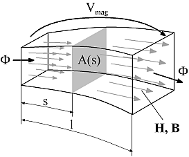
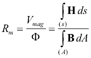
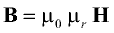
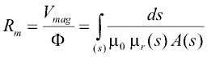
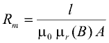
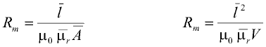
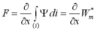
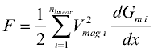
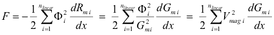

Modelica_Magnetic.UsersGuide
Modelica_Magnetic.UsersGuide
Modelica_Magnetic.UsersGuideThis library contains components for modelling of electromagnetic devices with lumped magnetic networks. Those models are suited for both rough design of the magnetic subsystem of a device as well as for efficient dynamic simulation at system level together with neighbouring subsystems. At present, components and examples for modelling of translatory electromagnetic and electrodynamic actuators are provided. If needed, these components can be adapted to network modellling of rotational electrical machines.
This users guide gives a short introduction to the underlying concept of magnetic flux tubes, summarizes the calculation of magnetic reluctance forces from lumped magnetic network models and lists reference literature.
Examples illustrates the usage of magnetic network models with simple models from different fields of application.
| Name | Description |
|---|---|
| Flux tube concept | |
| Reluctance forces | |
| Literature | |
| Contact |
Modelica_Magnetic.UsersGuide.FluxTubeConcept
Following below, the concept of magnetic flux tubes is outlined in short. For a detailed description of flux tube elements, please have a look at the listed literature. Magnetic flux tubes enable for modeling of magnetic fields with lumped networks. The figure below and the following equations illustrate the transition from the original magnetic field quantities described by Maxwell's equations to network elements with a flow variable and an across variable:





Similar equations can be derived for other geometries. In cases where a direct integration is not possible, the reluctance can be calclulated on base of average length, average cross sectional area and volume V respectively:

Network elements for sources of a magnetic potential difference or magnetomotive force, i.e. coils or permanent magnets can be formulated as well. The resulting magnetic network models of actuators reflect the main dimensions of these devices as well as the normally nonlinear characteristics of their magnetically active materials.
Modelica_Magnetic.UsersGuide.ReluctanceForceCalculationGenerally, the thrust F developed by a translatory electro-magneto-mechanical actuator (similar for the rotational case with torque and angular position) is equal to the change of magnetic co-energy Wm* with armature position x according to



Flux tube elements with nonlinear material characteristics μr(B) in magnetic network models do not restrict the usability of the above equation. However, it is required that these nonlinear flux tube elements do not change its shape with armature motion (e.g. portion of a solenoid plunger where the magnetic flux passes through in axial direction). This limitation is not a strong one, since the permeance of nonlinear, but highly permeable ferromagnetic flux tube elements and its change with armature position compared to that of air gap flux tubes can be neglected in most cases. Because of this constraint, the dimensions of possibly nonlinear flux tube elements in sub-package FluxTube.FixedShape are fixed, whereas the dimension in direction of motion of the linear flux tube elements in sub-package FluxTube.Force can vary during simulation. For the flux tubes defined in this package with their rather simple shapes, the derivative dGm/dx is given analytically. For more complex shapes and variations of dimensions with armature motion, it must be provided analytically during model development, preferably by extending the partial model FluxTube.Force.PartialForce.
The sub-package FluxTube.Leakage contains flux tube shapes typical for leakage flux around prismatic or cylindrical poles. Since the permeance of these flux tubes does not change with armature position, they do not contribute to a reluctance actuator's thrust.
Modelica_Magnetic.UsersGuide.Literature
Modelica_Magnetic.UsersGuide.ContactAcknowledgements: